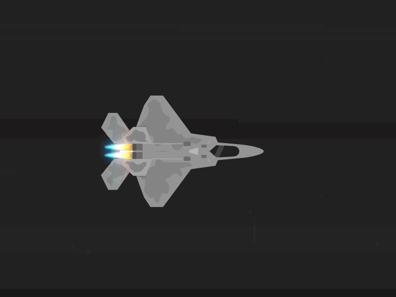

Hello!
Fact page about the F-22 Raptor

General characteristics
Primary function: air dominance, multi-role fighter
Contractor: Lockheed-Martin, Boeing
Power plant: two Pratt & Whitney F119-PW-100 turbofan engines with afterburners and two-dimensional thrust vectoring nozzles.
Thrust: 35,000-pound class (each engine)
Wingspan: 44 feet, 6 inches (13.6 meters)
Length: 62 feet, 1 inch (18.9 meters)
Height: 16 feet, 8 inches (5.1 meters)
Weight: 43,340 pounds (19,700 kilograms)
Maximum takeoff weight: 83,500 pounds (38,000 kilograms)
Fuel capacity: internal: 18,000 pounds (8,200 kilograms); with 2 external wing fuel tanks: 26,000 pounds (11,900 kilograms)
Payload: same as armament air-to-air or air-to-ground loadouts; with or without two external wing fuel tanks.
Speed: mach two class with supercruise capability
Range: more than 1,850 miles ferry range with two external wing fuel tanks (1,600 nautical miles)
Ceiling: above 50,000 feet (15 kilometers)
Armament: one M61A2 20-millimeter cannon with 480 rounds, or two 1,000-pound GBU-32 JDAMs and two AIM-120 radar-guided air-to-air missiles (air-to-ground loadout)
Arament continued: internal side weapon bays carriage of two AIM-9 infrared (heat seeking) air-to-air missiles and internal main weapon bays carriage of six AIM-120 radar-guided air-to-air missiles (air-to-air loadout)
Crew: one
Unit cost: $143 million
Initial operating capability: December 2005
Inventory: total force, 183